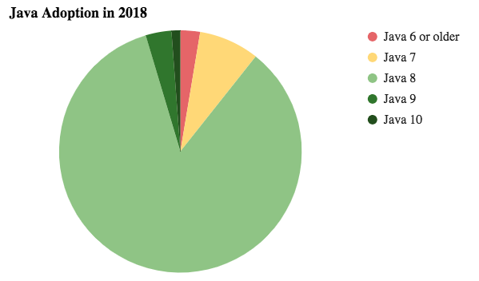
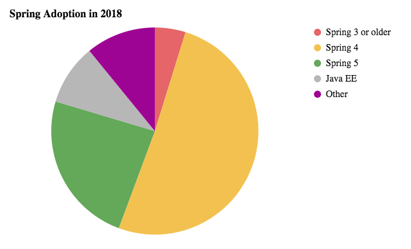
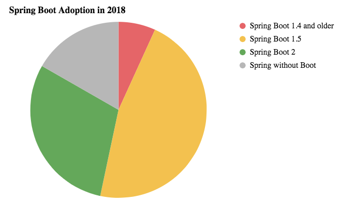
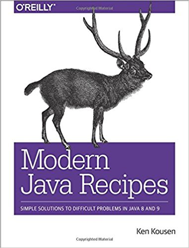

Java 10, 11 & Beyond
Empower your developers #EYD
Juan Antonio Breña MoralQuotes
- Highly productive teams grow their knowledge consciously, practicing continuous learning.
- The Challenge of Complexity Many things can put a project off course: bureaucracy, unclear objectives, and lack of resources, to name a few. But it is the approach to design that largely determines how complex software can become.
- Eric Evans
Agenda
- Java 10 features
- Java 11 features
- What is Modern Java?
- References
- Homework
- Q&A
Educational Goals
- Show features included with Java 10
- Show features that will appear in Java 11
- Explain the "Modern Java" philosophy
- What happen in the OpenJDK projects?
Java Context
- Java Lifecycle
- Java Architecture
Java Lifecycle

Java Architecture

Java 10 features
Java 11 features
What is modern Java?

What is modern Java?

What is modern Java?

References
Articles
Articles
Books

|
 |
Books

|

|
Books

|

|
Homework
- How to install multiple JVM?
- Did you review top libraries on Maven repository?
Q&A
|
|
@juanantoniobm https://ci.adoptopenjdk.net/ https://github.com/jabrena https://www.juanantonio.info |
"Pressure makes diamonds."- George S. Patton Jr.